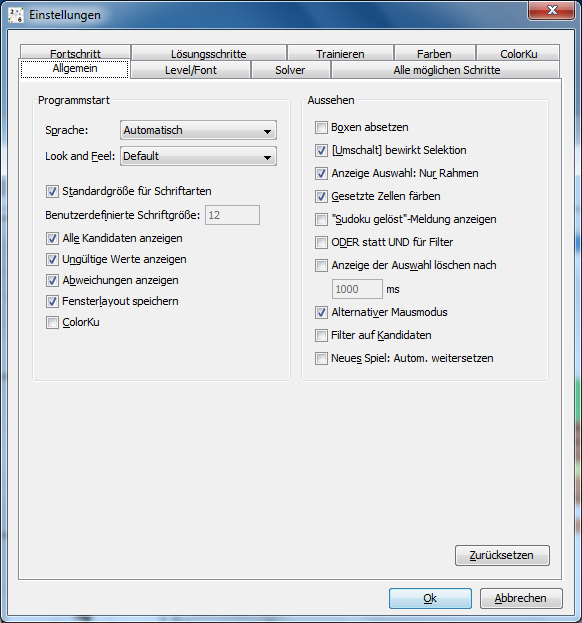
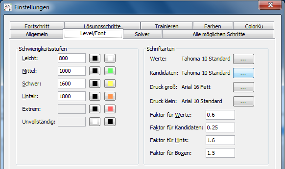
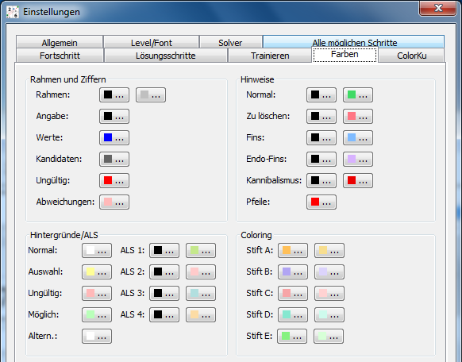
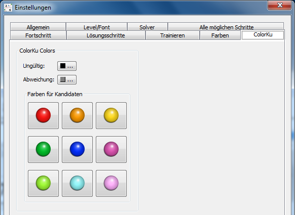

Kapitel 7: Referenz
Inhaltsverzeichnis
Optionen
Alle Optionen sind über den Dialog "Bearbeiten|Einstellungen" zugänglich. Jede Seite in diesem Dialog hat einen "Zurücksetzen" Schalter, der alle auf der Seite sichtbaren Optionen auf die Standardwerte zurücksetzt. HoDoKu speichert alle Einstellungen beim Beenden des Programms (siehe Von HoDoKu verwendete Dateien) und lädt sie beim nächsten Start wieder. Zusätzlich zu diesem Standardverhalten können die Optionen auch in Dateien geschrieben werden (siehe Konfigurationen und Sudokus speichern/laden). Diese Konfigurationsdateien können auch mit der Option /c für Batch-Läufe verwendet werden.
Obwohl HoDoKus Konfigurationsdateien Standard-XML-Dateien sind und daher mit jedem einfachen Texteditor geändert werden können, wird davon dringend abgeraten.
Allgemeine Optionen
Programmstart:
Der Abschnitt "Programmstart" wird für Optionen verwendet, die nur beim Starten des Programms angewendet werden (eine Ausnahme ist die Option "Look and Feel", die sofort angewendet wird; es wird trotzdem empfohlen, HoDoKu nach einer Änderung neu zu starten). Einige Optionen spiegeln die Anfangswerte der Einträge im Menü "Optionen" wieder. Wird einer der Menüeinträge während des Spiels geändert, wird diese Änderung nicht gespeichert, wenn das Programm beendet wird. Jede Checkbox entspricht dem Menüeintrag mit demselben Namen.
- Sprache: Die Sprache der Benutzeroberfläche.
- Look and Feel: Java-Programme können verschieden dargestellt werden. HoDoKu verwendet normalerweise das Look and Feel des Betriebssystems ("Default"), aber ein anderes Look and Feel kann hier gewählt werden.
- Standardgröße für Schriftarten: Menüs und Dialoge verwenden die Standardeinstellungen des Betriebssystems für Schriftarten und -größen.
- Benutzerdefinierte Schriftgröße: Wenn "Standardgröße für Schriftarten" abgewählt ist, kann hier eine benutzerdefinierte Schriftgröße eingetragen werden (funktioniert nicht mit GTK Look and Feel). Diese Funktion ist speziell für sehbeeinträchtigte Benutzer gedacht.
- Alle Kandidaten anzeigen: Zustand von "Optionen|Alle Kandidaten anzeigen" bei Start des Programms
- Ungültige Werte anzeigen: Zustand von "Optionen|Ungültige Werte anzeigen" bei Start des Programms
- Abweichungen anzeigen: Zustand von "Optionen|Abweichungen von der Lösung" bei Start des Programms
- Fensterlayout speichern: Speichert das Fensterlayout, wenn das Programm beendet wird, und stellt es beim nächsten Start wieder her
- ColorKu: Zustand von "Optionen|ColorKu" bei Start des Programms
Aussehen:
Verschiedene Optionen, die kontrollieren, wie HoDoKu aussieht und wie es auf Benutzereingaben reagiert:
- Boxen absetzen: Wenn gewählt, werden alle Boxen mit eigenem Rand und Zwischenraum zur nächsten Box dargestellt
- [Umschalt] bewirkt Selektion: Steuert das Verhalten der Maus: Wenn gewählt, kann [Umschalt][linker Mausknopf] dazu verwendet werden, einen rechteckigen Zellenbereich auszuwählen. Wenn nicht gewählt, kann [Umschalt][linker Mausknopf] dazu verwendet werden, Kandidaten ein- und auszuschalten
- Anzeige Auswahl: Nur Rahmen: Wenn gesetzt, werden selektierte Zellen mit einem dünnen gelben Rahmen gezeichnet; wenn nicht gesetzt, ist der Hintergrund selektierter Zellen durchgehend gelb
- Gesetzte Zellen färben: Gibt an, ob Zellen mit gesetzten Werten gefärbt werden sollen oder nicht
- "Sudoku gelöst"-Meldung anzeigen: Wenn gesetzt, wird eine Meldung angezeigt, sobald ein Sudoku vollständig gelöst ist
- ODER statt UND für Filter: Beeinflusst das Verhalten der Filter (siehe Filter verwenden für eine Erklärung)
- Anzeige der Auswahl löschen nach xx ms: Wenn gesetzt, wird der Fokus (der gelbe Hintergrund/Rahmen) nach der angegebenen Zeit gelöscht; bitte beachten Sie, dass diese Option nicht gültig ist, wenn mehrere Zellen gleichzeitig gewählt sind
- Alternativer Mausmodus: Wenn gesetzt, wird der Alternative Mausmodus verwendet
- Filter auf Kandidaten: Wenn gesetzt, werden Filter-Hintergründe nur für Kandidaten und nicht für ganze Zellen gezeichnet
- Neues Spiel: Autom. weitersetzen: Wenn gewählt, wird der Fokus automatisch zur nächsten Zelle weitergesetzt, wenn eine Ziffer eingegeben wurde (nur gültig für Neues Sudoku eingeben)
Optionen für Levels/Fonts
Die Optionen für Schwierigkeitsstufen sind detailliert in Bewertung und Schwierigkeitsstufen beschrieben
Fonts:
- "Werte" und "Kandidaten" werden zur Anzeige des Sudokus verwendet. Die Fontgröße wird ignoriert.
- "Druck groß" wird beim Drucken von Sudokus für Überschriften verwendet.
- "Druck klein" wird für die Ausgabe der Bewertung beim Ausdruck verwendet.
- "Faktor für Werte" bestimmt die Größe der Werte relativ zur aktuellen Größe der Zellen.
- "Faktor für Kandidaten" bestimmt die Größe der Kandidaten relativ zur aktuellen Größe der Zellen.
- "Faktor für Hints" setzt die Größe des Hintergrunds bei Hinweisen (die gefüllten Kreise) relativ zur aktuellen Größe der Zellen.
- "Faktor für Boxen" setzt die Dicke der Linien zwischen Boxen relativ zur Dicke der Linien zwischen Zellen.
Optionen für den Solver
Die Optionen für den Solver sind in Solver konfigurieren beschrieben.
Optionen für Alle Lösungsschritte finden
Die Optionen für Alle Lösungsschritte finden sind in Alle möglichen Schritte finden beschrieben.
Optionen für Fortschrittsmaß
Die Optionen für das Fortschrittsmaß sind in Fortschrittsmaß beschrieben.
Optionen für Lösungsschritte
Die Optionen für Lösungsschritte sind in Optionen für Lösungstechniken beschrieben.
Optionen für "Lernen"- bzw. "Üben"-Modus
Diese optionen sind in Spielmodi beschrieben.
Farben
Alle in HoDoKu verwendeten Farben können beliebig angepasst werden. Die Farben für die Schwierigkeitsgrade können auf der Seite "Allgemein" geändert werden.
ColorKu options
Alle von HoDoKu im ColorKu-Modus verwendeten Farben können ebenfalls beliebig geändert werden.
Kommandozeilenoptionen
HoDoKu kann als Kommandozeilenprogramm verwendet werden. Es kann einzelne Sudokus lösen, kann beliebig viele Sudokus aus einer Datei lesen und lösen und es kann Sudokus generieren, die bestimmte Lösungsschritte beinhalten. Da die für Windows bevorzugte exe-Datei keine eigenes Kommandozeilenfenster hat, öffnet die exe-Version von HoDoKu ein eigenes Fenster, wenn sie als Kommandozeilenprogramm gestartet wird. Um das Programm zu beenden, einfach "Programm beenden" anklicken.
Bitte beachten Sie, dass "piping" (Ein-/Ausgabeverkettung) mit der exe-Version von HoDoKu nicht möglich ist, Sie müssen die jar-Version verwenden.
Generelle Optionen
- /h, /?
- Gibt Hilfetext aus.
- /f <file>
- Lese Optionen aus Datei <file>. Kann mit beliebig vielen Optionen von der Kommandozeile oder von stdin kombiniert werden.
- /c <hcfg file>
- Verwende Konfigurationsdatei <hcfg file> für dieses eine Mal. Die Konfigurationsdatei sollte mit der grafischen Benutzeroberfläche von HoDoKu erstellt worden sein. Die Verwendung von /c verändert nicht die Konfiguration der grafischen Version von HoDoKu.
- /lt
- Liste die symbolischen Namen der einzelnen Lösungstechniken. Diese Namen können mit Optionen wie /sc oder /vg verwendet werden (siehe unten).
Einzelne Sudokus lösen
Das Sudoku muss als Zeichenkette in einem Format angegeben werden, das HoDoKu unterstützt. Für Zellen, die am Anfang keinen Wert enthalten sollen, kann '.' oder '0' verwendet werden. PM-Grids (textuelle Repräsentationen aller noch möglichen Kandidaten für jede Zelle) können ebenfalls verwendet werden, aber sobald in der Angabe Leerzeichen vorkommen, muss die Zeichenkette in " oder ' eingeschlossen werden. HoDoKu löst das Sudoku und schreibt es auf die Konsole, gefolgt von einem "#", einer fortlaufenden Nummer und der Bewertung der Schwierigkeit.
Die folgende Eingabe:
000000010400000000020000000000050407008000300001090000300400200050100000000806000
erzeugt die Ausgabe:
000000010400000000020000000000050407008000300001090000300400200050100000000806000 #1 Leicht (466)
Wenn für die Lösung Zellen geraten werden müssen, wird "bf" ("Brute Force") an die Ausgabe angehängt, bei Templates wird "ts" oder "td" angehängt und wenn das Sudoku mit der aktuellen Konfiguration nicht gelöst werden kann (nur möglich, wenn "Brute Force" deaktiviert ist), wird "gu" ("Give up") an die Ausgabe angehängt.
Das Ausgabeformat kann mit verschiedenen Optionen beeinflusst werden:
- /vs
- Lösung statt Angabe ausgeben.
- /vp
- Für jedes Sudoku den kompletten Lösungsweg ausgeben (eine Zeile pro Lösungsschritt).
- /vg [l|c|s:]<step>[,<step>...]
- Gib für jeden Lösungsschritt <step> den Zustand des Puzzles aus. Der optionale Parameter
bestimmt, wie die Ausgabe erfolgen soll:
- l: Ausgabe im Bibliotheksformat
- c: Ausgabe der Kandidaten (Standard)
- s: Ausgabe der Kandidaten mit Kennzeichnung des Lösungsschritts
- /vst
- Statistik ausgeben (Anzahl der verwendeten Techniken, der gesetzten Zellen und eliminierten Kandidaten). Wenn /vp angegeben wurde, wird die Statistik für jedes einzelne Sudoku ausgegeben.
- /vf <0|1|2>
- Setzt das Ausgabeformat für Fische (Default, Zahlen, Zellen)
Mehrere Sudokus in einem Durchgang lösen (batch solve)
Wenn mehrere Sudokus auf einmal gelöst werden sollen, müssen sie in eine Textdatei geschrieben werden (eine Zeile pro Sudoku). Jede Zeile kann in jedem Format sein, das HoDoKu unterstützt (z.B. 81 Zeichen lange Zeichenketten, HoDoKu-Bibliotheksformat oder das Format der q2-Taxonomie). An jedes Sudoku können '#' und eine beliebige Zeichenkette angehängt werden.
Alle Optionen, die beim Lösen einzelner Sudokus erlaubt sind, sind auch hier gültig.
- /bs <file>
- Löse alle Sudokus in der Datei <file>. Die Ausgabe wird auf die Konsole und in eine Datei <file>.out.txt oder eine mit /o angegebene Datei geschrieben.
Alle Lösungsschritte finden
- /bsa
- Führe die Funktion "Alle Lösungsschritte finden" für [puzzle] aus. Die Ausgabe wird auf die Konsole und in eine Datei <file>.out.txt oder eine mit /o angegebene Datei geschrieben.
- /bsaf <file>
- Führe die Funktion "Alle Lösungsschritte finden" für alle Sudokus in der Datei <file> aus. Die Ausgabe wird auf die Konsole und in eine Datei <file>.out.txt oder eine mit /o angegebene Datei geschrieben.
Suche nach Sudokus mit bestimmten Lösungstechniken
HoDoKu kann nach Sudokus suchen, die bestimmte Lösungstechniken enthalten (mehrere Lösungstechniken können für einen Lauf angegeben werden, pro Ausgabezeile wird aber nur eine Lösungstechnik verwendet). Die Optionen bestimmen, wie die Lösungsschritte in den Sudokus vorkommen sollen.
- /s
- Suche nach Sudokus, die Lösungsschritte gemäß /sc enthalten. Die Sudokus werden auf die Konsole und in eine Datei <step>[_<step>...].txt oder eine mit /o angegebene Datei geschrieben. An das Sudoku werden '#' und der Puzzle-Typ angehängt.
- /so <file>
- Nimm die Datei <file>, die mit /s erzeugt wurde, und sortiere sie nach Puzzle-Typ. Die Ausgabe wird auf die Konsole und in eine Datei <file>.out.txt oder eine mit /o angegebene Datei geschrieben. Wenn /sc angegeben wurde, werden nur Schritte geschrieben, die mit den Optionen von /sc übereinstimmen.
- /sc <step>[:0|1|2|3][+[e|g|l]n][,[-]<step>[:0|1|2|3][+[e|g|l]n]...]
- Definiere Sudoku-Eigenschaften für /s oder /so. <step> ist ein interner Name
gemäß /lt oder "all" (alle Schritte außer Singles), "nssts" (alle Schritte aus Singles,
h2, h3, h4, n2, n3, n4, l2, l3, lc1, lc2, bf2, bf3, bf4, xy, sc, mc) oder "nssts1" (nssts und
2sk, sk, bug1, w, u1, xyz, rp). "-" bedeutet, dass <step> nicht in der Lösung enthalten sein
darf (im ersten Schritt nicht erlaubt).
Der erste optionale Parameter bestimmt, wie die Lösungsschritte im Sudoku vorkommen sollen:- 0: Beliebige Schritte vor und nach dem Schritt erlaubt (x <step> x - Standard).
- 1: Nur SSTS vor und nach dem Schritt erlaubt (ssts <step> ssts).
- 2: Nur SSTS vor dem Schritt, nur Singles nach dem Schritt (ssts <step> s).
- 3: Nur Singles vor und nach dem Schritt erlaubt (s <step> s).
- e: Anzahl eliminierter Kandidaten ist gleich n
- l: Anzahl eliminierter Kandidaten ist kleiner als n
- g: Anzahl eliminierter Kandidaten ist größer als n
- /sl <level>
- Erzeugt nur Sudokus mit Schwierigkeitsstufe <level>. Gültige Werte für <level> sind:
- 0: Leicht
- 1: Mittel
- 2: Schwer
- 3: Unfair
- 4: Extrem
Verschiedene Optionen
- /o <file>
- Schreibe Ausgabe in die Datei <file>. Wenn <file> gleich "stdout" ist, erfolgt die Ausgabe in der Konsole.
- /stdin
- Lese zusätzliche Optionen von stdin. Kann mit /f und mit beliebig vielen direkt auf der Kommandozeile spezifizierten Optionen kombiniert werden.
Brute Force Test
- /bt <file>
- Lese Sudoku aus <file> und führe einen Brute Force Test durch: Nach jedem Lösungsschritt, der kein Single ist, wird für alle mit /bts angegebenen Schritte die Funktion "Alle Lösungsschritte finden" ausgeführt. Anschließend werden alle gefundenen Schritte gegen die korrekte Lösung geprüft, Abweichungen werden ausgegeben.
- /bts <step>[,<step>...]
- Eine Liste mit Lösungstechniken, für die der Brute Force Test durchgeführt werden soll.
Regression-Test
- /test <file>
- Führt alle Tests aus, die in <file> enthalten sind
- /testf <file>
- Führt alle Tests aus, die in <file> enthalten sind, außer jenen, deren Berechnung sehr lange dauert
SSTS sind die vom Programm "Simple Sudoku" unterstützten Techniken:
- Singles
- Locked Candidates
- Hidden/Naked Subsets (auch als Locked Subset)
- X-Wing
- Swordfish
- Jellyfish
- XY-Wing
- Simple/Multiple Colors
Von HoDoKu verwendete Dateien
HoDoKu erzeugt zwei Dateien im temporären Ordner des Computers (die Lage des temporären Ordners ist abhängig vom Betriebssystem - unter Windows ist es normalerweise "%USERPROFILE%\AppData\Local\Temp", unter Linux ist es normalerweise einfach nur "/tmp"). Die erste Datei heißt "hodoku.hcfg". Sie enthält die aktuelle Konfiguration. Die zweite Datei heißt "hodoku.log", in ihr werden Informationen über kritische Fehler gespeichert. Beide Dateien können problemlos gelöscht werden. Wird allerdings "hodoku.hcfg" gelöscht, startet HoDoKu das nächste Mal mit den Standardeinstellungen.
Copyright © 2008-12 von Bernhard Hobiger
Zuletzt geändert am 5. Mai 2025 von shorty#3746
(basierend auf dem 1to9only Github-Repo)
Alles Material auf dieser Site unterliegt der GNU FDLv1.3.